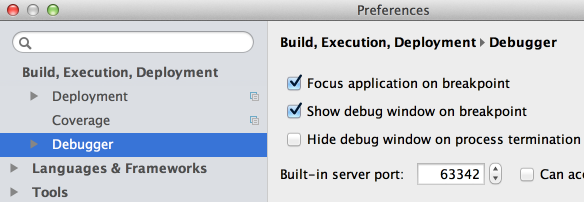

It is very easy to change the built-in web server port. In the Settings/Preferences dialog, expand the node Build, Execution, Deployment, and click Debugger. Then, use the "Built-in server port" spin box to set the new value.

Next, open an HTML page in your browser and see it running on the defined port.